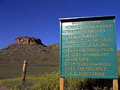
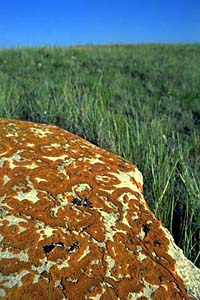

|
|
"Environmentally Sensitive Area". Please be careful where you walk and try not to disturb the natural environment. For additional information please contact Tourism Saskatchewan. | ||
| Buffalo Jump | |||
| GPS: | 49d 13.94m N | 104d 46.12m W | 2474 feet |
| Location: | In the Big Muddy, 18 kms west of Minton and 4 kms north. | ||
Plains Indian culture was centered around the buffalo. For thousands of years, before the introduction of horses from Europe, "Buffalo Jumps" and "Buffalo Pounds" were an effective means of hunting these large animals on foot. | |||
 Buffalo herds were gathered from the lands to the northeast and funnelled into the last half mile before the jump. Upright sticks in small piles of rocks with grass rope spanning between the sticks made the path down which the animals were "funnelled". As the buffalo approached the jump, the hunters cleverly used the animal's natural tendency to stampede when frightened, in order to drive the herd over the precipice for slaughtering. | |||
This is the largest of several bison kill sites in this valley. Four separate rock lines located on the rolling uplands above the prominent cliff, form two drive lines extending at least 2.5 miles east to cropland. | |||
At this location, the most prominent feature is the red rock escarpment with a drop of 35 feet to a steep 130 foot tall slope. | |||
Look for small clumps of stone spaced approximately 5 feet apart. It is estimated that around 7000 such cairns comprised the lines. | |||
 The valley floor, where large amounts of fire-cracked rock are found, was used as a processing area. Across the valley to the west are smaller kill sites, lines of rock, 1627 tipi rings, a possible sweat lodge locations, and a turtle effigy. | |||
Roan Mare Coulee Archaeological Site | |||
The Roan Mare valley is typical of the entire Big Muddy drainage, consisting of strongly dissected uplands with numerous escarpments and deep secondary coulee systems. | |||
The Big Muddy Valley to the south is a glacial spillway running parallel to the ice frontal position. The Roan Mare Channel was established to provide drainage as the ice retreated north. | |||
The surrounding hills are primarily virgin short grass prairie, some being prairie naturally reclaimed after being abandoned by homesteaders, and brown soil cropland.
| |||
This valley was named during the outlaw days, when the Big Muddy area was covered by a lot more water than today. The outlaws left a roan mare in this valley, while they rustled horses from homesteaders in the north. | |||
The mare was added to the outlaw herd and gunshots would force her to lead them across Big Muddy Lake. The roan mare was left on the south shore until the outlaws returned with new horses to sell to the homesteaders. When the outlaw days were over, a roan mare filly continued to live in the valley, keeping the name alive. | |||
Watch for white-tailed and mule deer, coyotes, badgers, golden eagles, turkey buzzards, hawks, falcons, owls, garter snakes and bull snakes as wonder around in Roan Mare Coulee. | |||
| GPS: 50d 25.99m N, 104d 36.90m W, 1835 feet 29 July 96, 4:50 pm, Fuji Velvia 50, F8 1/125s | |||
| |||
| |||
| |||